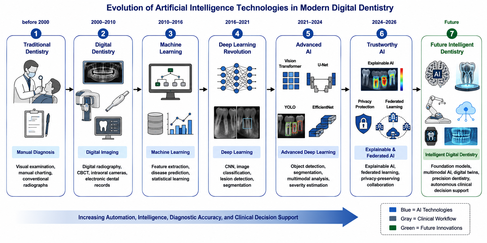
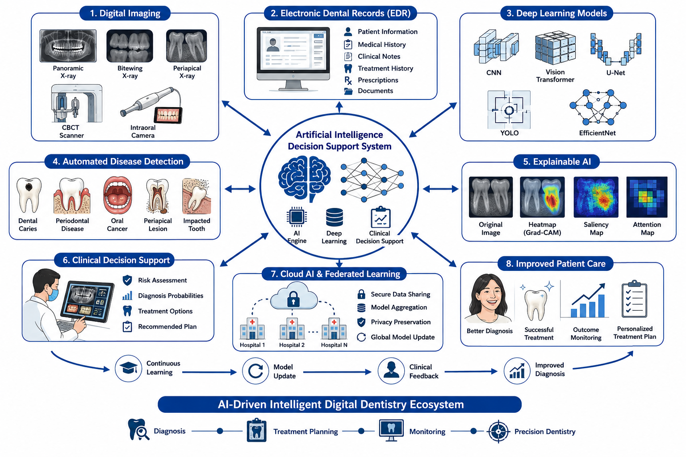

Keywords— Artificial Intelligence, Deep Learning, Dental Disease, Computer Vision, Medical Imaging, CNN, Vision Transformer, U-Net, YOLO, Explainable AI, Federated Learning, Digital Dentistry
Artificial Intelligence (AI) has become one of the most influential technological innovations in healthcare over the past decade. Advances in machine learning, deep learning, natural language processing, and computer vision have enabled intelligent systems capable of analyzing complex clinical data with remarkable efficiency. Healthcare organizations increasingly rely on AI-assisted technologies to improve diagnostic accuracy, reduce human error, optimize workflow efficiency, and support evidence-based clinical decision making. Dentistry represents one of the healthcare disciplines that has experienced rapid digital transformation because diagnosis and treatment planning rely extensively on medical imaging, structured patient information, and quantitative clinical measurements. Recent evidence indicates that AI has achieved strong diagnostic performance across multiple dental specialties, although challenges related to deployment, validation, and governance remain significant.
The widespread adoption of panoramic radiography, cone-beam computed tomography (CBCT), intraoral scanners, digital impressions, and electronic dental records has generated an unprecedented volume of clinical data. Interpretation of these datasets requires extensive clinical expertise and considerable time. Diagnostic variability among clinicians remains unavoidable because interpretation depends on professional experience, image quality, and patient-specific anatomical variations. Artificial Intelligence provides an opportunity to reduce such variability by automatically identifying clinically meaningful imaging features, detecting pathological abnormalities, and generating quantitative decision-support information. Rather than replacing clinicians, AI functions as an intelligent assistant capable of improving consistency, productivity, and diagnostic confidence.
Deep learning has become the dominant methodology within dental Artificial Intelligence because neural networks automatically learn complex image representations directly from clinical data without requiring handcrafted feature engineering. Convolutional Neural Networks (CNNs) remain widely adopted for disease classification, whereas Vision Transformers (ViTs) have demonstrated promising performance through global attention mechanisms. U-Net architectures have become standard for medical image segmentation, while object detection frameworks such as YOLO enable rapid localization of anatomical structures and pathological lesions. EfficientNet and hybrid ensemble models further improve diagnostic performance while reducing computational complexity. Collectively, these architectures have significantly expanded the capabilities of intelligent dental image analysis.
Artificial Intelligence is currently being investigated across nearly every dental specialty. Automated systems have demonstrated promising performance in detecting proximal dental caries, estimating periodontal bone loss, identifying oral potentially malignant disorders, recognizing periapical pathology, automating cephalometric landmark identification, planning implant placement, and supporting digital prosthodontic workflows. In addition to diagnostic applications, AI is increasingly used for patient communication, clinical documentation, appointment optimization, treatment prediction, and educational simulation. These developments indicate that AI will become an essential component of precision dentistry during the coming decade.
Despite remarkable technological progress, numerous research challenges remain unresolved. Many published studies rely on relatively small retrospective datasets collected from single institutions, reducing generalizability across diverse patient populations. The "black-box" nature of deep neural networks also limits clinician trust because predictions often lack transparent explanations. Ethical concerns regarding algorithmic fairness, cybersecurity, patient privacy, legal accountability, and regulatory approval further complicate clinical deployment. Consequently, future research must emphasize explainable AI, federated learning, standardized benchmarking protocols, multicenter validation, and integration with routine clinical workflows to ensure safe and effective implementation.
Motivated by these developments, this paper presents a comprehensive review of Artificial Intelligence in dental disease diagnosis. The objectives are to summarize current technological advances, evaluate representative clinical applications, compare major deep learning architectures, identify existing research gaps, propose a conceptual diagnostic framework, and discuss future directions that may accelerate the translation of AI research into real-world dental practice.

| Imaging Technique | Clinical Application | Primary AI Task |
|---|---|---|
| Bitewing Radiographs | Dental Caries Detection | Classification |
| Panoramic Radiographs | Periodontal Assessment | Detection and Segmentation |
| CBCT | Implant Planning | 3D Analysis |
| Intraoral Images | Oral Cancer Screening | Image Classification |
| Digital Impressions | Orthodontics & Prosthodontics | Measurement and Prediction |
Artificial Intelligence (AI) has evolved from a research-oriented technology into a practical component of digital healthcare systems. In dentistry, AI is increasingly integrated with digital imaging devices, cloud computing platforms, electronic dental records (EDRs), and computer-aided design/computer-aided manufacturing (CAD/CAM) systems. This integration enables intelligent clinical workflows in which image acquisition, disease detection, treatment planning, and patient monitoring can be partially automated while remaining under the supervision of dental professionals. Recent literature indicates that AI should be viewed as an intelligent clinical assistant that enhances diagnostic consistency rather than replacing the expertise of dentists.
The transition toward digital dentistry has significantly increased the availability of structured clinical information. Modern dental practices routinely generate panoramic radiographs, bitewing radiographs, periapical radiographs, cone-beam computed tomography (CBCT) scans, intraoral photographs, digital impressions, and three-dimensional dental models. Manual interpretation of these heterogeneous data sources is often time-consuming and susceptible to inter-observer variability. AI algorithms reduce this variability by automatically extracting clinically relevant features and providing objective diagnostic recommendations supported by quantitative image analysis.
Machine learning techniques have been successfully applied to disease classification, lesion detection, image segmentation, tooth numbering, cephalometric landmark identification, implant planning, and treatment outcome prediction. Deep learning has further accelerated progress because neural networks automatically learn hierarchical image features directly from clinical data without requiring handcrafted feature engineering. These capabilities have substantially improved the efficiency of computer-aided diagnosis across multiple dental specialties.
Another important development is the emergence of cloud-enabled dental AI platforms. Cloud computing allows computationally intensive deep learning models to process high-resolution dental images without requiring expensive local hardware. Such platforms facilitate tele-dentistry, remote consultation, collaborative diagnosis, and centralized model updates. When combined with secure data-sharing mechanisms and standardized clinical workflows, cloud-based AI systems can improve access to specialist expertise, particularly in underserved regions.
Artificial Intelligence is also contributing to administrative and operational aspects of dental healthcare. Intelligent scheduling systems optimize appointment allocation, predictive analytics assists in estimating treatment duration, natural language processing supports automatic clinical documentation, and conversational AI improves patient communication. Although these applications receive less attention than image analysis, they represent important components of the broader digital transformation occurring throughout modern dentistry.

The widespread adoption of AI has introduced several advantages for clinicians, researchers, and patients. Automated analysis reduces repetitive diagnostic tasks, allowing clinicians to devote more time to patient interaction and complex treatment planning. Standardized image interpretation minimizes observer variability, while quantitative assessment improves disease monitoring during follow-up examinations. AI-assisted diagnosis may also contribute to earlier disease detection, thereby improving treatment outcomes and reducing long-term healthcare costs.
| Application Area | Role of Artificial Intelligence | Clinical Benefit |
|---|---|---|
| Disease Detection | Automated interpretation of radiographic images | Earlier diagnosis |
| Treatment Planning | Clinical decision support | Improved treatment consistency |
| Image Segmentation | Automatic identification of anatomical structures | Reduced manual workload |
| Patient Monitoring | Longitudinal disease assessment | Objective follow-up evaluation |
| Administrative Support | Scheduling and documentation automation | Improved operational efficiency |
Despite considerable progress, several obstacles continue to limit widespread implementation of AI-assisted dental diagnosis. Many published models have been trained using retrospective datasets collected from single institutions, reducing their ability to generalize across different populations and imaging devices. Annotation quality also varies considerably because expert interpretation may differ among clinicians, introducing uncertainty into supervised learning datasets.
Model interpretability represents another significant concern. Although deep learning systems frequently achieve high predictive performance, clinicians require transparent explanations before incorporating automated recommendations into routine practice. Explainable AI techniques such as saliency maps, Grad-CAM visualizations, and attention mechanisms are therefore becoming increasingly important for improving trust and accountability.
Regulatory approval, cybersecurity, interoperability with existing hospital information systems, and protection of sensitive patient information remain essential prerequisites for large-scale deployment. Future AI systems must therefore satisfy not only technical performance requirements but also ethical, legal, and clinical governance standards.
These developments indicate that the future of dental Artificial Intelligence extends beyond automated image classification toward comprehensive clinical decision-support systems capable of integrating multiple sources of patient information while maintaining transparency, security, and clinical reliability.
Artificial Intelligence has found practical applications across nearly every branch of dentistry. Deep learning models are increasingly capable of recognizing pathological patterns from radiographic images, intraoral photographs, CBCT scans, and digital dental models with high consistency. Among the most extensively investigated clinical applications are dental caries detection, periodontal disease assessment, oral cancer screening, endodontic diagnosis, orthodontic treatment planning, and prosthodontic rehabilitation. The following sections summarize the current state of AI-based diagnosis for the two most common oral diseases.
Dental caries remains one of the most prevalent chronic diseases worldwide and continues to represent a significant burden on oral healthcare systems. Early diagnosis is essential because intervention during the initial stages of demineralization can prevent irreversible tooth destruction and reduce the need for invasive restorative procedures. Conventional diagnosis relies on visual examination supported by bitewing or periapical radiographs. However, interpretation is influenced by image quality, lesion size, and clinician experience, resulting in inter-observer variability.
Artificial Intelligence has significantly improved automated caries detection by employing deep learning algorithms capable of identifying subtle radiographic changes associated with enamel and dentin lesions. Convolutional Neural Networks (CNNs) have become the dominant architecture because they automatically learn hierarchical visual features directly from annotated dental images. Transfer learning using pretrained networks such as ResNet, DenseNet, EfficientNet, and Inception has further improved diagnostic performance while reducing computational requirements.
Recent studies have demonstrated that AI-assisted diagnosis can achieve diagnostic performance comparable to experienced clinicians for proximal caries detection when trained using sufficiently large and representative datasets. Automated systems also provide consistent lesion localization, reducing subjective variation during image interpretation. These capabilities are particularly valuable in preventive dentistry because earlier detection enables minimally invasive treatment strategies and improved long-term patient outcomes.
Beyond conventional radiographs, researchers have investigated near-infrared transillumination, fluorescence imaging, optical coherence tomography, and intraoral photography as complementary sources of diagnostic information. Integration of multiple imaging modalities using multimodal deep learning may further improve sensitivity for detecting early-stage lesions that remain difficult to identify using a single imaging technique.
| Technique | Input Image | Primary Objective | Clinical Benefit |
|---|---|---|---|
| CNN | Bitewing Radiograph | Caries Classification | High diagnostic consistency |
| EfficientNet | Panoramic Image | Early Lesion Detection | Computational efficiency |
| Vision Transformer | Dental Photograph | Lesion Recognition | Global contextual analysis |
| Ensemble Deep Learning | Multiple Modalities | Decision Support | Improved robustness |
Periodontal disease is characterized by inflammation and progressive destruction of the supporting tissues surrounding teeth. If left untreated, chronic periodontal disease may lead to irreversible alveolar bone loss and eventual tooth loss. Diagnosis generally combines clinical examination with radiographic assessment of periodontal bone levels. Manual interpretation, however, is time-consuming and may vary among clinicians.
Artificial Intelligence provides automated quantitative assessment of periodontal bone loss by combining image segmentation and classification techniques. U-Net architectures have become particularly successful because they generate precise pixel-level segmentation of teeth and surrounding alveolar bone. These segmented structures enable objective measurement of bone height and facilitate automatic estimation of disease severity.
Recent research has also demonstrated the usefulness of CNN-based classifiers for categorizing periodontal disease into mild, moderate, and severe stages. Three-dimensional CBCT imaging further improves diagnostic capability by providing volumetric visualization of periodontal defects. AI algorithms trained on CBCT data can identify anatomical structures more accurately than conventional two-dimensional approaches, supporting individualized treatment planning.
In addition to diagnosis, AI contributes to longitudinal monitoring by comparing sequential examinations obtained during periodontal therapy. Automated quantitative measurements reduce observer variability and provide clinicians with objective indicators of treatment response, thereby supporting evidence-based clinical decision-making.
| AI Model | Clinical Task | Output | Potential Application |
|---|---|---|---|
| U-Net | Bone Segmentation | Bone Mask | Quantitative Analysis |
| CNN | Disease Classification | Severity Category | Clinical Decision Support |
| Vision Transformer | Pattern Recognition | Risk Estimation | Predictive Assessment |
| Hybrid Deep Learning | Integrated Diagnosis | Disease Probability | Comprehensive Evaluation |
Although current results are encouraging, future investigations should emphasize multicenter validation, standardized annotation protocols, explainable prediction models, and prospective clinical trials. Such developments will improve confidence in AI-assisted periodontal diagnosis and facilitate integration into routine dental practice.
Oral cancer is among the most serious oral diseases because delayed diagnosis is strongly associated with poor prognosis and reduced survival rates. Oral Squamous Cell Carcinoma (OSCC) accounts for the majority of malignant oral tumors, making early detection a critical clinical objective. Conventional diagnosis relies on visual examination, adjunctive imaging, histopathological analysis, and biopsy. However, early-stage lesions often resemble benign abnormalities, increasing the possibility of delayed diagnosis.
Artificial Intelligence has demonstrated considerable potential in supporting early oral cancer detection through automated analysis of intraoral photographs, histopathological slides, fluorescence imaging, hyperspectral imaging, and radiographic examinations. Deep learning algorithms learn discriminative image features associated with tissue abnormalities, enabling classification of potentially malignant disorders and malignant lesions with increasing accuracy. AI-based screening systems can prioritize suspicious lesions for specialist evaluation, thereby reducing diagnostic delays and improving referral efficiency.
Convolutional Neural Networks (CNNs) remain the most frequently employed architecture for oral lesion classification because they automatically extract hierarchical image features. More recently, Vision Transformer architectures have demonstrated promising performance by capturing long-range spatial relationships across complex oral images. Transfer learning further improves diagnostic capability by adapting pretrained networks to relatively small oral pathology datasets.
Despite encouraging results, several challenges remain unresolved. Many published studies rely on limited retrospective image collections obtained from individual institutions, reducing generalizability across diverse patient populations. Variability in imaging conditions, illumination, camera quality, and annotation protocols further complicates model development. Future research should therefore emphasize multicenter validation, explainable AI, standardized imaging protocols, and prospective clinical trials before widespread implementation in routine screening programs.
Endodontics has become one of the fastest-growing application areas of Artificial Intelligence because successful treatment depends upon accurate interpretation of radiographic and three-dimensional imaging. Diagnosis commonly involves identification of root canal morphology, periapical lesions, root fractures, internal or external resorption, and anatomical variations. Manual interpretation is often challenging because of overlapping structures and limited visibility in two-dimensional radiographs.
Deep learning algorithms provide automated assistance by detecting pathological changes, segmenting root canal systems, and identifying anatomical landmarks from periapical radiographs and cone-beam computed tomography (CBCT) images. CNN-based classification models distinguish healthy structures from diseased tissues, whereas segmentation architectures such as U-Net accurately delineate canals, roots, and surrounding anatomical regions. These capabilities improve treatment planning while reducing inter-observer variability.
Artificial Intelligence also supports working-length estimation, detection of missed canals, localization of periapical pathology, and postoperative assessment following root canal therapy. Integration of AI with three-dimensional CBCT imaging further improves visualization of complex anatomical structures that may not be clearly visible on conventional radiographs.
Although published results demonstrate promising diagnostic performance, routine clinical implementation requires standardized datasets, multicenter validation, explainable prediction mechanisms, and seamless integration with endodontic imaging software. Future intelligent decision-support systems are expected to combine radiographic analysis with patient history, clinical symptoms, and electronic dental records to provide personalized treatment recommendations.
| Clinical Area | Primary Imaging Modality | Common AI Models | Major Clinical Objective |
|---|---|---|---|
| Oral Cancer | Intraoral Images, Histopathology | CNN, Vision Transformer | Early lesion classification |
| Oral Potentially Malignant Disorders | Clinical Photographs | CNN, EfficientNet | Risk assessment |
| Periapical Lesions | Periapical Radiographs | CNN | Disease detection |
| Root Canal Segmentation | CBCT | U-Net | Anatomical localization |
| Vertical Root Fracture | CBCT | Hybrid Deep Learning | Fracture identification |
The rapid progress achieved in oral cancer diagnosis and endodontics illustrates the broader impact of Artificial Intelligence across dental specialties. Continued collaboration between clinicians, engineers, and researchers will be essential for translating these promising algorithms into reliable clinical decision-support systems that improve patient outcomes while maintaining transparency, safety, and professional oversight.
Orthodontics has experienced a remarkable transformation with the adoption of digital technologies, including three-dimensional imaging, intraoral scanners, computer-aided treatment planning, and Artificial Intelligence. Traditional orthodontic diagnosis requires manual identification of cephalometric landmarks, skeletal measurements, and evaluation of dental relationships. These procedures are labor-intensive and may exhibit inter-observer variability. AI-assisted systems have significantly improved workflow efficiency by automating landmark detection and providing quantitative measurements with high reproducibility.
Deep learning algorithms analyze cephalometric radiographs, panoramic images, facial photographs, and digital dental models to identify anatomical landmarks, classify malocclusions, and estimate skeletal relationships. Automatic landmark localization reduces the time required for orthodontic diagnosis while minimizing measurement errors. Furthermore, AI-based prediction models assist clinicians in evaluating treatment alternatives, estimating treatment duration, and forecasting post-treatment outcomes.
Recent advances in three-dimensional imaging have enabled AI models to analyze complete craniofacial structures rather than relying solely on two-dimensional radiographs. Integration of CBCT data with digital dental models allows comprehensive assessment of tooth position, jaw relationships, and facial symmetry. These capabilities support personalized treatment planning for fixed appliances, clear aligners, and orthognathic surgery.
Artificial Intelligence is also increasingly used during treatment monitoring. Automated comparison of sequential intraoral scans enables clinicians to evaluate tooth movement, assess treatment progress, and identify deviations from planned outcomes. Cloud-based platforms further facilitate remote patient monitoring and tele-orthodontic consultation, improving accessibility while reducing unnecessary clinical visits.
Prosthodontics has become one of the principal beneficiaries of digital dentistry through the integration of Artificial Intelligence with CAD/CAM technologies, intraoral scanning, digital impressions, and additive manufacturing. Modern prosthodontic workflows increasingly rely on intelligent software capable of designing crowns, bridges, dentures, veneers, and implant-supported restorations while reducing manual intervention.
Deep learning algorithms analyze digital impressions and CBCT images to identify anatomical landmarks, estimate occlusal relationships, and optimize prosthesis design. AI-assisted systems support clinicians by recommending restoration geometry, evaluating implant placement, and identifying potential biomechanical complications before treatment begins. Integration with CAD/CAM manufacturing enables rapid fabrication of personalized restorations with improved precision.
Artificial Intelligence also contributes to implant dentistry by automatically identifying the mandibular canal, maxillary sinus, alveolar ridge, and surrounding anatomical structures. These capabilities improve implant planning by reducing the risk of surgical complications and facilitating accurate virtual implant positioning. When combined with three-dimensional printing technologies, AI enables highly individualized restorative workflows.
Although digital prosthodontics has advanced rapidly, future research should focus on improving interoperability between imaging systems, CAD/CAM platforms, and electronic dental records. Standardized data exchange and multicenter clinical validation will be essential for ensuring reliable deployment across diverse clinical environments.
| Dental Specialty | Primary Clinical Task | Common AI Techniques | Expected Clinical Benefit |
|---|---|---|---|
| Dental Caries | Early lesion detection | CNN, EfficientNet | Improved early diagnosis |
| Periodontics | Bone loss assessment | U-Net, CNN | Objective severity estimation |
| Oral Cancer | Lesion classification | CNN, Vision Transformer | Early screening support |
| Endodontics | Periapical lesion detection | CNN, U-Net | Improved treatment planning |
| Orthodontics | Cephalometric analysis | Deep CNN, Vision Models | Automated landmark identification |
| Prosthodontics | Digital restoration planning | CAD/CAM AI, CNN | Personalized prosthesis design |
Collectively, these applications demonstrate that Artificial Intelligence is evolving from a research tool into a comprehensive clinical decision-support technology spanning diagnosis, treatment planning, monitoring, and digital workflow optimization. Nevertheless, successful clinical implementation will depend upon robust validation, explainable decision-making, standardized datasets, and seamless integration with existing healthcare infrastructure.
The rapid growth of AI-assisted dentistry has been driven primarily by advances in deep learning. Modern neural network architectures automatically learn discriminative representations from medical images and have substantially outperformed conventional machine learning approaches in image classification, segmentation, object detection, and disease localization. Different architectures are optimized for different clinical tasks; therefore, understanding their strengths and limitations is essential for selecting appropriate models in dental applications.
The following subsections discuss the principal deep learning architectures currently employed in AI-assisted dental diagnosis, including Convolutional Neural Networks (CNNs), Vision Transformers (ViTs), U-Net, YOLO, and EfficientNet.
Deep learning has become the cornerstone of Artificial Intelligence (AI) applications in dentistry because of its ability to learn complex hierarchical representations directly from imaging data. Unlike conventional machine learning algorithms that require handcrafted feature extraction, deep neural networks automatically identify discriminative features during the training process. This capability has significantly improved diagnostic accuracy across multiple dental imaging modalities including panoramic radiographs, bitewing radiographs, cone-beam computed tomography (CBCT), cephalometric radiographs, intraoral photographs, and three-dimensional digital dental models.
The remarkable success of deep learning in dentistry can be attributed to advances in computational hardware, availability of transfer learning models, cloud computing, and improvements in medical image processing. Different deep learning architectures have been developed to address specific clinical tasks such as image classification, lesion segmentation, anatomical landmark detection, object localization, and treatment prediction. Among these architectures, Convolutional Neural Networks (CNNs), Vision Transformers (ViTs), U-Net, YOLO, and EfficientNet have become the most widely adopted in dental AI research.
Convolutional Neural Networks (CNNs) represent the most extensively investigated deep learning architecture in dental image analysis. CNNs employ convolutional filters that automatically extract hierarchical image features ranging from simple edges to complex anatomical structures. During training, the network progressively learns clinically relevant representations associated with teeth, bone structures, restorations, lesions, and pathological changes.
CNN-based models have demonstrated excellent performance in detecting dental caries, periodontal disease, periapical lesions, impacted teeth, oral cancer, and implant-related abnormalities. Transfer learning using pretrained models such as ResNet, DenseNet, Inception, VGG, and MobileNet has further improved classification performance while reducing the amount of labelled dental data required for training.
Although CNNs remain highly accurate, their major limitations include dependence on large annotated datasets, substantial computational requirements, and limited interpretability. Consequently, explainable AI methods are increasingly incorporated to visualize the image regions responsible for predictions.
| Advantages | Limitations |
|---|---|
|
|
Vision Transformers represent a recent advancement in computer vision that replaces convolution operations with self-attention mechanisms. Instead of analysing only local neighbourhoods, Vision Transformers divide an image into multiple patches and learn relationships among all patches simultaneously. This enables improved understanding of global anatomical structures and long-range contextual information.
Within dentistry, Vision Transformers have demonstrated promising performance in oral lesion classification, panoramic image interpretation, orthodontic landmark detection, and CBCT analysis. Hybrid CNN–Transformer architectures further improve diagnostic capability by combining local feature extraction with global contextual learning.
Despite these advantages, Vision Transformers generally require larger datasets than CNNs for optimal performance. Future multicentre collaborations and self-supervised learning strategies are expected to improve their applicability in dental imaging.
Image segmentation is essential for numerous dental applications, including tooth isolation, periodontal bone measurement, implant planning, lesion localisation, and root canal analysis. U-Net has become the most widely adopted medical image segmentation architecture because its encoder–decoder structure preserves fine anatomical details while producing accurate pixel-level segmentation.
In dental AI, U-Net is extensively used for segmentation of individual teeth, alveolar bone, mandibular canals, maxillary sinuses, periapical lesions, and root canal systems. Accurate segmentation enables objective quantitative measurements that improve diagnosis and facilitate computer-assisted treatment planning.
Object detection has become increasingly important for automated localisation of teeth, implants, pathological lesions, and anatomical landmarks. The YOLO family of algorithms performs localisation and classification simultaneously, making it suitable for real-time clinical applications. Compared with two-stage detectors, YOLO offers significantly faster inference while maintaining competitive detection accuracy.
YOLO-based systems have been successfully applied to tooth numbering, impacted third molar detection, implant localisation, orthodontic landmark identification, and oral lesion screening. These capabilities make YOLO particularly attractive for chairside diagnostic software where rapid image interpretation is required.
EfficientNet introduces compound scaling of network depth, width, and input resolution, achieving an effective balance between computational efficiency and predictive performance. Compared with conventional CNN architectures, EfficientNet requires fewer parameters while maintaining excellent classification accuracy.
Dental AI researchers increasingly employ EfficientNet for classification of panoramic radiographs, intraoral images, oral lesions, and dental caries because of its relatively low computational cost. EfficientNet is particularly suitable for deployment on cloud-based systems and mobile healthcare platforms where computational resources are limited.
| Model | Primary Task | Strengths | Representative Applications |
|---|---|---|---|
| CNN | Classification | High accuracy and mature architecture | Caries, oral cancer, periodontal disease |
| Vision Transformer | Classification | Captures global contextual information | Panoramic analysis, lesion classification |
| U-Net | Segmentation | Excellent pixel-level precision | Bone segmentation, tooth isolation |
| YOLO | Object Detection | Real-time inference | Tooth numbering, implant localisation |
| EfficientNet | Classification | High efficiency with fewer parameters | Dental caries, oral disease classification |
Overall, each deep learning architecture provides unique advantages depending on the clinical objective. CNNs remain the standard for image classification, U-Net dominates segmentation tasks, YOLO excels in real-time detection, EfficientNet offers computational efficiency, and Vision Transformers provide improved global feature modelling. Future intelligent dental systems are expected to integrate multiple architectures into unified multimodal frameworks capable of delivering accurate, explainable, and clinically reliable decision support.
```html id="part7datasets"The performance of Artificial Intelligence models is strongly influenced by the quality, diversity, and annotation accuracy of the datasets used during training and evaluation. Deep learning algorithms require representative clinical data covering different age groups, disease stages, imaging modalities, and acquisition conditions. Although dentistry has witnessed rapid growth in AI research, publicly available dental datasets remain relatively limited compared with those available in general computer vision and other medical imaging domains. This limitation affects model generalizability and hinders fair comparison among competing algorithms.
Dental AI datasets typically include bitewing radiographs, panoramic radiographs, periapical radiographs, cone-beam computed tomography (CBCT), intraoral photographs, cephalometric radiographs, and three-dimensional digital dental models. Depending on the intended application, annotations may identify individual teeth, restorations, dental caries, periodontal bone loss, periapical lesions, root canals, implants, cephalometric landmarks, oral lesions, or other clinically significant structures. High-quality annotation generally requires consensus among experienced dental specialists, making dataset preparation both time-consuming and expensive.
Another important challenge is data heterogeneity. Images acquired using different manufacturers, exposure settings, image resolutions, and clinical protocols often exhibit substantial variation. Consequently, models trained using data from a single institution frequently demonstrate reduced performance when evaluated using external datasets. Development of multicenter benchmark datasets with standardized annotation protocols therefore remains a priority for future research.
To address the scarcity of annotated clinical data, researchers are increasingly investigating federated learning, self-supervised learning, weakly supervised learning, and synthetic image generation using generative AI. Federated learning enables collaborative model development without transferring sensitive patient data between institutions, while synthetic image generation can augment rare disease classes and partially reduce dataset imbalance. These strategies are expected to improve model robustness while preserving patient privacy.
| Imaging Modality | Typical Clinical Applications | Common AI Tasks |
|---|---|---|
| Bitewing Radiographs | Dental Caries | Classification, Detection |
| Periapical Radiographs | Endodontics | Lesion Detection |
| Panoramic Radiographs | Periodontics, Tooth Detection | Segmentation, Classification |
| CBCT | Implant Planning | 3D Segmentation |
| Cephalometric Radiographs | Orthodontics | Landmark Detection |
| Intraoral Images | Oral Cancer | Image Classification |
| Digital Dental Models | Prosthodontics | Measurement and Prediction |
Numerous studies published during recent years have demonstrated encouraging performance of Artificial Intelligence across multiple dental specialties. Nevertheless, comparison among published investigations remains challenging because researchers employ different datasets, evaluation metrics, preprocessing methods, model architectures, and validation strategies. Consequently, reported performance should be interpreted within the context of study design rather than considered directly comparable.
Classification studies commonly report Accuracy, Precision, Recall, Sensitivity, Specificity, F1-score, and Area Under the Receiver Operating Characteristic Curve (AUC). Segmentation studies frequently utilize Dice Similarity Coefficient (DSC), Intersection over Union (IoU), and Hausdorff Distance, whereas object detection studies often report mean Average Precision (mAP). Although many publications report excellent internal validation performance, comparatively few include external multicenter validation, highlighting an important opportunity for future research.
CNN-based architectures continue to provide strong baseline performance for disease classification tasks because of their mature ecosystem and extensive availability of pretrained models. Vision Transformers have demonstrated increasing competitiveness for large-scale datasets by capturing long-range contextual information. U-Net remains the preferred architecture for segmentation of teeth and supporting anatomical structures, while YOLO provides efficient real-time object detection suitable for chairside applications. EfficientNet offers an attractive compromise between computational efficiency and predictive accuracy, making it suitable for deployment on cloud-based and mobile diagnostic platforms.
| Dental Specialty | Primary AI Model | Main Clinical Task | Typical Evaluation Metric |
|---|---|---|---|
| Dental Caries | CNN / EfficientNet | Lesion Classification | Accuracy, AUC |
| Periodontal Disease | U-Net | Bone Segmentation | Dice Score, IoU |
| Oral Cancer | CNN / Vision Transformer | Lesion Classification | Sensitivity, Specificity |
| Endodontics | CNN | Periapical Lesion Detection | AUC, Precision |
| Orthodontics | Deep CNN | Landmark Detection | Localization Error |
| Prosthodontics | CNN + CAD/CAM AI | Implant Planning | Clinical Agreement |
Overall, the available evidence demonstrates that AI has achieved substantial improvements in diagnostic accuracy and workflow efficiency across multiple dental specialties. However, future studies should prioritize standardized benchmarking protocols, multicenter validation, transparent reporting, and reproducible evaluation methodologies to facilitate objective comparison and accelerate clinical translation.
Although Artificial Intelligence has demonstrated remarkable potential in dental disease diagnosis, several scientific, technical, and clinical limitations continue to restrict its widespread adoption. Most existing studies focus primarily on improving predictive accuracy using retrospective datasets; comparatively fewer investigations examine model robustness, clinical integration, interpretability, and long-term deployment. Consequently, there remains a considerable gap between research prototypes and real-world clinical decision-support systems.
One of the most frequently reported limitations is the availability of high-quality annotated datasets. Many published models are developed using images collected from a single institution, often with limited patient diversity and relatively small sample sizes. Models trained under these conditions may perform well during internal validation but frequently experience performance degradation when evaluated using data from different hospitals, imaging devices, or geographic populations. Improving dataset diversity through multicenter collaboration therefore represents an important research priority.
Another challenge concerns annotation quality. Supervised deep learning depends on reliable ground-truth labels; however, interpretation of dental radiographs may vary among specialists, particularly for early-stage lesions or borderline pathological conditions. Differences in annotation protocols introduce uncertainty during model training and reduce reproducibility across independent studies. Future benchmark datasets should therefore employ standardized annotation guidelines and expert consensus mechanisms.
Model explainability also remains an important limitation. Although deep neural networks frequently achieve excellent diagnostic performance, clinicians are understandably reluctant to rely on predictions that cannot be interpreted. Modern explainable AI techniques such as Gradient-weighted Class Activation Mapping (Grad-CAM), saliency visualization, attention heatmaps, and feature attribution methods provide useful insights into model behaviour, but further research is required to improve their clinical usability and reliability.
Most current investigations analyse only imaging data while ignoring complementary clinical information such as patient history, medical conditions, medication usage, behavioural risk factors, laboratory findings, and previous treatment records. Future AI systems should integrate multimodal information to produce comprehensive clinical decision support rather than image-only classification.
Data privacy and regulatory compliance present additional challenges. Healthcare institutions are often unable to exchange patient data because of legal and ethical restrictions. As a result, collaborative development of large multicentre datasets remains difficult. Privacy-preserving learning strategies, including federated learning and secure model aggregation, offer promising solutions but require further investigation before routine implementation.
| Research Area | Current Limitation | Future Opportunity |
|---|---|---|
| Datasets | Limited size and diversity | Large multicentre benchmark datasets |
| Generalization | Weak external validation | Cross-institutional evaluation |
| Explainability | Black-box predictions | Clinically interpretable AI |
| Multimodal Learning | Image-only models | Integration of imaging and clinical records |
| Privacy | Restricted data sharing | Federated and privacy-preserving learning |
| Clinical Validation | Retrospective studies dominate | Prospective multicentre clinical trials |
| Standardization | Different evaluation protocols | Common reporting and benchmarking standards |
Based on the reviewed literature, several promising research directions emerge. First, development of open, standardized dental datasets spanning multiple institutions and imaging modalities will improve reproducibility and external validity. Second, integration of imaging data with electronic dental records, laboratory findings, and patient-specific clinical information may enable personalized diagnostic systems capable of supporting precision dentistry. Third, explainable AI should become a core component of future decision-support systems to improve clinician confidence and facilitate regulatory approval.
Emerging technologies such as foundation models, multimodal transformers, federated learning, self-supervised learning, synthetic data generation, and digital twins represent additional opportunities for advancing AI-assisted dentistry. These approaches have the potential to improve model robustness while reducing dependence on large manually annotated datasets. Future research should also investigate human–AI collaboration, where intelligent systems complement rather than replace clinical expertise.
Addressing these research gaps will require close collaboration among dental clinicians, computer scientists, biomedical engineers, regulatory agencies, and healthcare organizations. Such multidisciplinary efforts are expected to accelerate the translation of AI innovations from laboratory research into safe, reliable, and clinically effective dental decision-support systems.
```html id="part8framework"Based on the limitations identified in the reviewed literature, this paper proposes a conceptual Artificial Intelligence framework for comprehensive dental disease diagnosis. The objective of the framework is not to replace clinical expertise but to provide an intelligent decision-support environment capable of improving diagnostic consistency, reducing interpretation time, and facilitating evidence-based treatment planning. Unlike conventional image-only diagnostic models, the proposed framework integrates multimodal clinical information, explainable AI, continuous learning, and clinician feedback into a unified architecture.
The framework has been designed according to four fundamental principles: (i) acquisition of high-quality multimodal data, (ii) intelligent feature extraction using deep learning, (iii) transparent decision support through explainable AI, and (iv) continuous model improvement based on validated clinical outcomes. Together, these components aim to improve diagnostic robustness while maintaining transparency and clinical accountability.
The proposed framework consists of seven interconnected layers that transform raw patient information into clinically interpretable diagnostic recommendations. Each layer performs a specific function while exchanging structured information with adjacent modules.
The diagnostic workflow begins when patient information is acquired from multiple clinical sources. Image preprocessing improves quality and standardizes inputs before feature extraction. Appropriate deep learning architectures are selected according to the clinical task. Classification networks identify diseases, segmentation models isolate anatomical structures, and object detection algorithms localize pathological regions. The Explainable AI module subsequently highlights image regions responsible for each prediction, allowing clinicians to evaluate model reasoning prior to making the final diagnosis.
Once the clinician confirms or corrects the AI-generated diagnosis, validated outcomes are stored within the learning module. Periodic retraining using newly validated data enables continuous performance improvement while adapting to evolving clinical practice.
| Framework Component | Contribution | Clinical Benefit |
|---|---|---|
| Multimodal Data Integration | Combines imaging and patient records | Improved diagnostic accuracy |
| Deep Learning Engine | Automated disease recognition | Reduced diagnostic time |
| Explainable AI | Visual interpretation of predictions | Greater clinician confidence |
| Clinical Decision Support | Treatment recommendations | Evidence-based planning |
| Continuous Learning | Model refinement using validated outcomes | Long-term performance improvement |
| Cloud Integration | Centralized model deployment | Scalable implementation |
The proposed framework has been intentionally designed to support future technological developments. Emerging foundation models, multimodal transformers, large language models, digital twins, wearable oral health sensors, and federated learning can be integrated into the architecture without fundamental redesign. Such extensibility will enable future AI systems to evolve alongside advances in digital dentistry while maintaining interoperability with hospital information systems and electronic dental records.
Although conceptual, the proposed framework addresses several limitations identified in the current literature by emphasizing multimodal learning, explainability, clinician oversight, and continuous learning. These characteristics provide a practical roadmap for future research toward trustworthy, transparent, and clinically deployable AI-assisted dental diagnostic systems.
The rapid adoption of deep learning has significantly improved the diagnostic performance of Artificial Intelligence (AI) systems in dentistry. However, many state-of-the-art neural networks operate as "black-box" models, producing highly accurate predictions without providing sufficient information regarding the reasoning behind those decisions. In clinical environments, where patient safety and professional accountability are paramount, clinicians must understand not only what the AI predicts but also why a particular prediction has been generated. Consequently, Explainable Artificial Intelligence (XAI) has become an essential research direction for trustworthy AI-assisted dental diagnosis.
Explainable AI refers to a collection of computational techniques that increase the transparency and interpretability of machine learning models. Instead of presenting only a disease label or probability score, XAI methods identify image regions, clinical variables, or learned features that contribute most strongly to the final prediction. Such explanations enable clinicians to validate AI recommendations against their own clinical knowledge, thereby improving confidence and facilitating collaborative decision-making.
Several explainability approaches have been investigated for dental image analysis. Gradient-weighted Class Activation Mapping (Grad-CAM) produces heatmaps highlighting image regions that influence CNN predictions. Saliency maps visualize pixel-level importance, whereas attention maps generated by transformer architectures illustrate how different image regions interact during classification. Local Interpretable Model-Agnostic Explanations (LIME) and SHapley Additive exPlanations (SHAP) provide feature-level interpretation and quantify the contribution of individual variables toward model predictions.
For example, in automated dental caries detection, Grad-CAM visualizations can highlight demineralized enamel regions responsible for classification. During periodontal disease assessment, heatmaps identify alveolar bone structures influencing disease severity estimation. Similarly, oral cancer classification models may indicate suspicious mucosal regions requiring further clinical examination. Such visual evidence enables clinicians to compare AI-generated explanations with conventional diagnostic reasoning.
Although explainability techniques provide valuable visual insights, they also exhibit limitations. Different explanation methods may generate inconsistent interpretations for identical predictions, and some visualization techniques remain sensitive to image preprocessing and model architecture. Furthermore, many existing XAI methods provide qualitative rather than quantitative explanations, making objective evaluation difficult. Future research should therefore focus on standardized evaluation metrics for explanation quality, clinician-centered visualization techniques, and integration of explanation mechanisms directly into AI model development.
One of the most significant obstacles limiting Artificial Intelligence research in healthcare is restricted access to large multicenter datasets. Patient privacy regulations, institutional policies, and legal constraints frequently prevent hospitals from sharing clinical data. As a result, many AI models are developed using relatively small local datasets that may not adequately represent diverse patient populations. Federated Learning (FL) has emerged as a promising solution to this challenge by enabling collaborative model development without transferring sensitive patient information.
In a federated learning environment, each participating healthcare institution trains an identical deep learning model using its own local data. Instead of sharing patient images or clinical records, institutions transmit only encrypted model parameters or gradients to a secure aggregation server. The server combines updates received from multiple institutions to generate an improved global model, which is subsequently redistributed for further training. This iterative process continues until model convergence is achieved while preserving patient confidentiality.
Federated learning offers several advantages for dental AI. First, models benefit from significantly larger and more diverse datasets without requiring centralized data storage. Second, collaboration among hospitals improves model generalizability across imaging devices, geographic regions, and demographic groups. Third, patient privacy is strengthened because raw clinical information never leaves the originating institution. These characteristics make federated learning particularly attractive for large-scale dental research networks.
Potential applications include collaborative development of AI systems for dental caries detection, periodontal disease assessment, oral cancer screening, implant planning, orthodontic diagnosis, and multicenter benchmarking of dental imaging algorithms. Integration of federated learning with cloud computing and explainable AI could further accelerate deployment of trustworthy clinical decision-support systems.
| Feature | Clinical Significance |
|---|---|
| Privacy Preservation | Patient data remain within each institution. |
| Multicenter Collaboration | Improves model robustness and diversity. |
| Regulatory Compliance | Supports data protection requirements. |
| Scalability | Allows participation of multiple hospitals. |
| Generalization | Improves performance across different populations. |
Despite its considerable promise, federated learning introduces new technical challenges including communication overhead, heterogeneous computing resources, non-identically distributed (non-IID) datasets, secure aggregation, model poisoning attacks, and synchronization among participating institutions. Addressing these challenges will require advances in distributed optimization, cybersecurity, trustworthy AI, and healthcare data governance.
Future intelligent dental ecosystems are expected to combine federated learning, explainable AI, multimodal deep learning, and cloud-based clinical decision support. Such integrated systems have the potential to improve diagnostic accuracy while preserving privacy, supporting collaboration, and enabling continuous learning across geographically distributed healthcare organizations.
The increasing adoption of Artificial Intelligence in dentistry introduces important ethical, legal, and social considerations that must be addressed before AI systems can be routinely integrated into clinical practice. Although AI offers substantial improvements in diagnostic efficiency and clinical decision support, responsible implementation requires careful attention to patient safety, transparency, fairness, privacy, and professional accountability. Ethical governance should therefore be considered an integral component of AI system development rather than an afterthought during deployment.
Patient privacy remains one of the most significant concerns. Dental images, electronic dental records, and demographic information constitute sensitive healthcare data that require secure storage, controlled access, and appropriate anonymization. AI developers should implement robust cybersecurity mechanisms, encryption techniques, and privacy-preserving learning strategies to reduce the risk of unauthorized disclosure or misuse of patient information.
Algorithmic bias represents another important ethical challenge. Models trained using datasets that inadequately represent different demographic groups, imaging devices, or disease prevalence may demonstrate unequal performance across patient populations. Such bias can potentially contribute to inaccurate diagnoses or unequal healthcare outcomes. Consequently, future AI systems should be evaluated using diverse multicenter datasets to improve fairness and generalizability.
Transparency and accountability are equally important. AI systems should provide interpretable explanations supporting their predictions while maintaining human oversight throughout the diagnostic process. Dentists remain responsible for clinical decision-making; therefore, AI recommendations should supplement rather than replace professional judgement. Regulatory agencies and healthcare institutions should establish clear guidelines regarding responsibility, validation, documentation, and clinical use of AI-assisted decision-support systems.
| Ethical Issue | Potential Impact | Recommended Mitigation |
|---|---|---|
| Patient Privacy | Unauthorized disclosure of clinical data | Encryption, anonymization, secure storage |
| Algorithmic Bias | Unequal diagnostic performance | Diverse multicenter datasets |
| Transparency | Limited clinician trust | Explainable AI techniques |
| Clinical Accountability | Unclear responsibility | Human oversight and governance |
| Cybersecurity | Data breaches and model attacks | Secure infrastructure and monitoring |
| Regulatory Compliance | Delayed clinical adoption | Compliance with healthcare regulations |
Artificial Intelligence in dentistry continues to evolve rapidly, creating numerous opportunities for future investigation. While current systems demonstrate impressive diagnostic performance, the next generation of intelligent dental technologies is expected to move beyond isolated image classification toward comprehensive clinical decision-support ecosystems. Future research should emphasize collaboration between dental clinicians, computer scientists, biomedical engineers, and healthcare organizations to develop trustworthy, explainable, and clinically deployable AI solutions.
One important direction involves multimodal learning, where radiographic images, CBCT scans, intraoral photographs, electronic dental records, laboratory findings, and patient history are analysed simultaneously. Such integrated systems are expected to provide more comprehensive diagnostic assessments than image-only approaches. Foundation models and multimodal transformer architectures may further improve generalization by learning robust representations from large heterogeneous datasets.
Federated learning, self-supervised learning, synthetic data generation, and privacy-preserving machine learning are also expected to play increasingly important roles in overcoming current dataset limitations. These techniques can improve model robustness while minimizing dependence on large manually annotated datasets and protecting sensitive patient information.
Future intelligent dental systems may also incorporate wearable oral health sensors, Internet of Medical Things (IoMT) devices, digital twins, robotic assistance, and conversational AI. Integration with cloud computing and edge computing will facilitate real-time chairside decision support, while explainable AI will improve clinician confidence and regulatory acceptance. Longitudinal prospective clinical studies and standardized benchmarking protocols will remain essential for validating these emerging technologies.
Artificial Intelligence has emerged as one of the most influential technologies transforming modern dentistry. Recent advances in deep learning, computer vision, explainable AI, and digital imaging have enabled highly accurate detection of dental caries, periodontal diseases, oral cancer, endodontic abnormalities, orthodontic conditions, and prosthodontic treatment requirements. These technologies have demonstrated considerable potential to improve diagnostic consistency, reduce clinician workload, support evidence-based treatment planning, and enhance patient care.
Despite remarkable technological progress, widespread clinical implementation remains limited by several challenges, including restricted availability of diverse datasets, limited external validation, algorithmic bias, insufficient explainability, privacy concerns, and regulatory requirements. Addressing these challenges will require multidisciplinary collaboration among clinicians, researchers, engineers, healthcare organizations, and policymakers.
This review has summarized the current landscape of AI-assisted dental disease diagnosis, discussed major deep learning architectures, examined representative clinical applications, identified important research gaps, and proposed a conceptual framework emphasizing multimodal learning, explainability, continuous learning, and clinician oversight. The proposed framework provides a foundation for future research aimed at developing trustworthy and clinically deployable intelligent diagnostic systems.
Future advances in foundation models, federated learning, multimodal transformers, cloud computing, and digital dentistry are expected to accelerate the integration of Artificial Intelligence into routine clinical practice. Rather than replacing dental professionals, AI should be viewed as an intelligent partner that augments clinical expertise, improves diagnostic quality, and contributes to more personalized, efficient, and evidence-based oral healthcare.